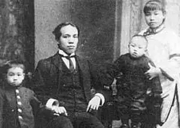

梁启超的为父之道：亲切有味 以身作则
 275
275
梁思礼是中国近代思想家梁启超最小的儿子。梁启超的后人一门三院士，这在中国科学史上绝无仅有。长子梁思成当上了建筑学院士，次子梁思永是考古学院士，小儿子梁思礼因研究火箭控制系统被评为院士。
一个亲切有味的父亲
梁思礼被叫做“老白鼻”，这是父亲梁启超对他的昵称。风趣的父亲将英语Baby（宝贝）一词汉化，变成属于梁思礼特有的甜蜜。也正是这个“老白鼻”，后来成为我国航天质量可靠性工程学的开创者和学术带头人之一。
梁启超重视子女教育，但绝非板着面孔说教。相反，在孩子们面前，他是一个亲切有味的父亲，一个童心未泯的老顽童。诸如称谓上，对长女思顺，梁启超常亲切地称其为“娴儿”“宝贝思顺”“顺儿”等；对思懿，则干脆取外号为“司马懿”；至于思宁，却又以行名，呼为六六。后来，思顺、思成、思永、思忠、思庄同在国外，梁启超写信时，又写作“一大群大大小小孩子们”“大孩子、小孩子们”。形式各异的称呼中，映衬出父亲的慈爱与亲切，慈父形象跃然纸上。
梁启超虽然希望子女个个成才，却又不希望看到孩子们因忙于学习而致使身体有损。在给长女思顺的信里，梁启超一再告诫最宝贝的女儿，“功课迫则不妨减少，多停数日亦无伤。要之，吾儿万不可病，汝再病则吾之焦灼不可状矣”。多年后，对远在美国的思成，梁启超也多次提醒他注意身体。只有真正疼爱孩子的父亲，才会在孩子的健康与学习之间，毫不迟疑地选择前者。

身教重于言传
在子女的教育上，梁启超以身作则，身教重于言传。梁启超九个子女的成才，与家庭环境有莫大关系，父亲的耳提面命是一个重要的因素。他特别注意培养孩子们的感恩心、同情心及礼数。对于帮助过家庭的二叔，他叮嘱孩子们逢年过节必须去信道谢、拜年；外祖父去世，他不但叮嘱孩子们来信安慰妈妈，还要给舅舅们去信表达抚慰之意。梁家的儿女们忠孝传家。
对于治学，梁启超看重的不是成功与否，而是治学的态度。在写给思成、思永的信中，他教训道：“汝等能升级固善，不能亦不必愤懑，但问果能用功与否。若既竭吾才，则于心无愧；若缘殆荒所致，则是自暴自弃，非吾家佳子弟矣。”思成在外求学期间，对所学专业产生疑惑，来信询问，梁启超为其解惑：“各人自审其性之所近何如，人人发挥其个性之特长，以靖献于社会，人才经济莫过于此。”梁思成后来曾说，父亲的治学方法对他和思永的影响特别大。梁思礼也说，父亲伟大的人格、博大坦诚的心胸、趣味主义和乐观精神，对新事物的敏感性和严谨的治学态度都是取之不尽、用之不竭的精神源泉。
不可贪图享乐
对于儿女职业的选择，梁启超教育他们要敢于吃苦冒险，不可贪图享乐。
梁启超得知瑞典著名学者要组织一个团体前往新疆考古，立刻想到了正在美国学习考古的梁思永，他认为如果梁思永能够加入考古队锻炼，对他将来的学问研究必会十分有益。于是，他便连去了几封信，告诉梁思永这一消息，尽管最终没能成行，但梁启超为了儿子实践学习，不愿意放过任何机会的良苦用心，令人感动。
梁思成和儿媳林徽因即将学成回国的时候，东北大学和清华大学的教员职位都向他们抛来了橄榄枝。梁启超认为东北虽苦，却是未开发的地方，在那边几年，将来或可辟一新路；而清华大学虽然方便闲适，但却是“温柔乡”，容易消磨人的意志。果然，最终接受了东北大学聘请的梁思成，很快便大展宏图，在那里创立了中国现代教育史上第一个建筑学系。
除此之外，梁启超还有许多教育观点，比如“求学问不是求文凭，总要把墙基越筑的厚越好”、“失望沮丧，是我们生命上最可怖之敌，我们须终身不许它侵入”、“研究所嗜好的学问”等等，字字珠玑，真可谓是不可多得的教育良方，值得天下父母去细细学习体会。
本文转自《北京日报》。